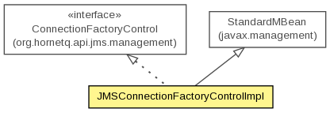

org.hornetq.jms.management.impl
Class JMSConnectionFactoryControlImpl
java.lang.Object
 javax.management.StandardMBean
org.hornetq.jms.management.impl.JMSConnectionFactoryControlImpl
javax.management.StandardMBean
org.hornetq.jms.management.impl.JMSConnectionFactoryControlImpl
- All Implemented Interfaces:
- DynamicMBean, MBeanRegistration, ConnectionFactoryControl
public class JMSConnectionFactoryControlImpl
- extends StandardMBean
- implements ConnectionFactoryControl

- Author:
- Jeff Mesnil
| Methods inherited from class javax.management.StandardMBean |
cacheMBeanInfo, getAttribute, getAttributes, getCachedMBeanInfo, getClassName, getConstructors, getDescription, getDescription, getDescription, getDescription, getDescription, getDescription, getDescription, getImpact, getImplementation, getImplementationClass, getMBeanInterface, getParameterName, getParameterName, invoke, postDeregister, postRegister, preDeregister, preRegister, setAttribute, setAttributes, setImplementation |
| Methods inherited from class java.lang.Object |
clone, equals, finalize, getClass, hashCode, notify, notifyAll, toString, wait, wait, wait |
JMSConnectionFactoryControlImpl
public JMSConnectionFactoryControlImpl(ConnectionFactoryConfiguration cfConfig,
HornetQConnectionFactory cf,
JMSServerManager jmsManager,
String name)
throws NotCompliantMBeanException
- Throws:
NotCompliantMBeanException
getJNDIBindings
public String[] getJNDIBindings()
- Specified by:
getJNDIBindings in interface ConnectionFactoryControl
isCompressLargeMessages
public boolean isCompressLargeMessages()
- Specified by:
isCompressLargeMessages in interface ConnectionFactoryControl
setCompressLargeMessages
public void setCompressLargeMessages(boolean compress)
- Specified by:
setCompressLargeMessages in interface ConnectionFactoryControl
isHA
public boolean isHA()
- Specified by:
isHA in interface ConnectionFactoryControl
getFactoryType
public int getFactoryType()
- Specified by:
getFactoryType in interface ConnectionFactoryControl
getClientID
public String getClientID()
- Specified by:
getClientID in interface ConnectionFactoryControl
getClientFailureCheckPeriod
public long getClientFailureCheckPeriod()
- Specified by:
getClientFailureCheckPeriod in interface ConnectionFactoryControl
setClientID
public void setClientID(String clientID)
- Specified by:
setClientID in interface ConnectionFactoryControl
setDupsOKBatchSize
public void setDupsOKBatchSize(int dupsOKBatchSize)
- Specified by:
setDupsOKBatchSize in interface ConnectionFactoryControl
setTransactionBatchSize
public void setTransactionBatchSize(int transactionBatchSize)
- Specified by:
setTransactionBatchSize in interface ConnectionFactoryControl
setClientFailureCheckPeriod
public void setClientFailureCheckPeriod(long clientFailureCheckPeriod)
- Specified by:
setClientFailureCheckPeriod in interface ConnectionFactoryControl
setConnectionTTL
public void setConnectionTTL(long connectionTTL)
- Specified by:
setConnectionTTL in interface ConnectionFactoryControl
setCallTimeout
public void setCallTimeout(long callTimeout)
- Specified by:
setCallTimeout in interface ConnectionFactoryControl
setCallFailoverTimeout
public void setCallFailoverTimeout(long callTimeout)
- Specified by:
setCallFailoverTimeout in interface ConnectionFactoryControl
setConsumerWindowSize
public void setConsumerWindowSize(int consumerWindowSize)
- Specified by:
setConsumerWindowSize in interface ConnectionFactoryControl
setConsumerMaxRate
public void setConsumerMaxRate(int consumerMaxRate)
- Specified by:
setConsumerMaxRate in interface ConnectionFactoryControl
setConfirmationWindowSize
public void setConfirmationWindowSize(int confirmationWindowSize)
- Specified by:
setConfirmationWindowSize in interface ConnectionFactoryControl
setProducerMaxRate
public void setProducerMaxRate(int producerMaxRate)
- Specified by:
setProducerMaxRate in interface ConnectionFactoryControl
getProducerWindowSize
public int getProducerWindowSize()
- Specified by:
getProducerWindowSize in interface ConnectionFactoryControl
setProducerWindowSize
public void setProducerWindowSize(int producerWindowSize)
- Specified by:
setProducerWindowSize in interface ConnectionFactoryControl
setCacheLargeMessagesClient
public void setCacheLargeMessagesClient(boolean cacheLargeMessagesClient)
- Specified by:
setCacheLargeMessagesClient in interface ConnectionFactoryControl
isCacheLargeMessagesClient
public boolean isCacheLargeMessagesClient()
- Specified by:
isCacheLargeMessagesClient in interface ConnectionFactoryControl
setMinLargeMessageSize
public void setMinLargeMessageSize(int minLargeMessageSize)
- Specified by:
setMinLargeMessageSize in interface ConnectionFactoryControl
setBlockOnNonDurableSend
public void setBlockOnNonDurableSend(boolean blockOnNonDurableSend)
- Specified by:
setBlockOnNonDurableSend in interface ConnectionFactoryControl
setBlockOnAcknowledge
public void setBlockOnAcknowledge(boolean blockOnAcknowledge)
- Specified by:
setBlockOnAcknowledge in interface ConnectionFactoryControl
setBlockOnDurableSend
public void setBlockOnDurableSend(boolean blockOnDurableSend)
- Specified by:
setBlockOnDurableSend in interface ConnectionFactoryControl
setAutoGroup
public void setAutoGroup(boolean autoGroup)
- Specified by:
setAutoGroup in interface ConnectionFactoryControl
setPreAcknowledge
public void setPreAcknowledge(boolean preAcknowledge)
- Specified by:
setPreAcknowledge in interface ConnectionFactoryControl
setMaxRetryInterval
public void setMaxRetryInterval(long retryInterval)
- Specified by:
setMaxRetryInterval in interface ConnectionFactoryControl
setRetryIntervalMultiplier
public void setRetryIntervalMultiplier(double retryIntervalMultiplier)
- Specified by:
setRetryIntervalMultiplier in interface ConnectionFactoryControl
setReconnectAttempts
public void setReconnectAttempts(int reconnectAttempts)
- Specified by:
setReconnectAttempts in interface ConnectionFactoryControl
setFailoverOnInitialConnection
public void setFailoverOnInitialConnection(boolean failover)
- Specified by:
setFailoverOnInitialConnection in interface ConnectionFactoryControl
isUseGlobalPools
public boolean isUseGlobalPools()
- Specified by:
isUseGlobalPools in interface ConnectionFactoryControl
setScheduledThreadPoolMaxSize
public void setScheduledThreadPoolMaxSize(int scheduledThreadPoolMaxSize)
- Specified by:
setScheduledThreadPoolMaxSize in interface ConnectionFactoryControl
getThreadPoolMaxSize
public int getThreadPoolMaxSize()
- Specified by:
getThreadPoolMaxSize in interface ConnectionFactoryControl
setThreadPoolMaxSize
public void setThreadPoolMaxSize(int threadPoolMaxSize)
- Specified by:
setThreadPoolMaxSize in interface ConnectionFactoryControl
getInitialMessagePacketSize
public int getInitialMessagePacketSize()
- Specified by:
getInitialMessagePacketSize in interface ConnectionFactoryControl
setGroupID
public void setGroupID(String groupID)
- Specified by:
setGroupID in interface ConnectionFactoryControl
getGroupID
public String getGroupID()
- Specified by:
getGroupID in interface ConnectionFactoryControl
setUseGlobalPools
public void setUseGlobalPools(boolean useGlobalPools)
- Specified by:
setUseGlobalPools in interface ConnectionFactoryControl
getScheduledThreadPoolMaxSize
public int getScheduledThreadPoolMaxSize()
- Specified by:
getScheduledThreadPoolMaxSize in interface ConnectionFactoryControl
setRetryInterval
public void setRetryInterval(long retryInterval)
- Specified by:
setRetryInterval in interface ConnectionFactoryControl
getMaxRetryInterval
public long getMaxRetryInterval()
- Specified by:
getMaxRetryInterval in interface ConnectionFactoryControl
getConnectionLoadBalancingPolicyClassName
public String getConnectionLoadBalancingPolicyClassName()
- Specified by:
getConnectionLoadBalancingPolicyClassName in interface ConnectionFactoryControl
setConnectionLoadBalancingPolicyClassName
public void setConnectionLoadBalancingPolicyClassName(String name)
- Specified by:
setConnectionLoadBalancingPolicyClassName in interface ConnectionFactoryControl
getStaticConnectors
public TransportConfiguration[] getStaticConnectors()
- Specified by:
getStaticConnectors in interface ConnectionFactoryControl
getDiscoveryGroupConfiguration
public DiscoveryGroupConfiguration getDiscoveryGroupConfiguration()
- Specified by:
getDiscoveryGroupConfiguration in interface ConnectionFactoryControl
addJNDI
public void addJNDI(String jndi)
throws Exception
- Specified by:
addJNDI in interface ConnectionFactoryControl
- Throws:
Exception
removeJNDI
public void removeJNDI(String jndi)
throws Exception
- Specified by:
removeJNDI in interface ConnectionFactoryControl
- Throws:
Exception
getCallTimeout
public long getCallTimeout()
- Specified by:
getCallTimeout in interface ConnectionFactoryControl
getCallFailoverTimeout
public long getCallFailoverTimeout()
- Specified by:
getCallFailoverTimeout in interface ConnectionFactoryControl
getConsumerMaxRate
public int getConsumerMaxRate()
- Specified by:
getConsumerMaxRate in interface ConnectionFactoryControl
getConsumerWindowSize
public int getConsumerWindowSize()
- Specified by:
getConsumerWindowSize in interface ConnectionFactoryControl
getProducerMaxRate
public int getProducerMaxRate()
- Specified by:
getProducerMaxRate in interface ConnectionFactoryControl
getConfirmationWindowSize
public int getConfirmationWindowSize()
- Specified by:
getConfirmationWindowSize in interface ConnectionFactoryControl
getDupsOKBatchSize
public int getDupsOKBatchSize()
- Specified by:
getDupsOKBatchSize in interface ConnectionFactoryControl
isBlockOnAcknowledge
public boolean isBlockOnAcknowledge()
- Specified by:
isBlockOnAcknowledge in interface ConnectionFactoryControl
isBlockOnNonDurableSend
public boolean isBlockOnNonDurableSend()
- Specified by:
isBlockOnNonDurableSend in interface ConnectionFactoryControl
isBlockOnDurableSend
public boolean isBlockOnDurableSend()
- Specified by:
isBlockOnDurableSend in interface ConnectionFactoryControl
isPreAcknowledge
public boolean isPreAcknowledge()
- Specified by:
isPreAcknowledge in interface ConnectionFactoryControl
getName
public String getName()
- Specified by:
getName in interface ConnectionFactoryControl
getConnectionTTL
public long getConnectionTTL()
- Specified by:
getConnectionTTL in interface ConnectionFactoryControl
getReconnectAttempts
public int getReconnectAttempts()
- Specified by:
getReconnectAttempts in interface ConnectionFactoryControl
isFailoverOnInitialConnection
public boolean isFailoverOnInitialConnection()
- Specified by:
isFailoverOnInitialConnection in interface ConnectionFactoryControl
getMinLargeMessageSize
public int getMinLargeMessageSize()
- Specified by:
getMinLargeMessageSize in interface ConnectionFactoryControl
getRetryInterval
public long getRetryInterval()
- Specified by:
getRetryInterval in interface ConnectionFactoryControl
getRetryIntervalMultiplier
public double getRetryIntervalMultiplier()
- Specified by:
getRetryIntervalMultiplier in interface ConnectionFactoryControl
getTransactionBatchSize
public int getTransactionBatchSize()
- Specified by:
getTransactionBatchSize in interface ConnectionFactoryControl
isAutoGroup
public boolean isAutoGroup()
- Specified by:
isAutoGroup in interface ConnectionFactoryControl
getMBeanInfo
public MBeanInfo getMBeanInfo()
- Specified by:
getMBeanInfo in interface DynamicMBean- Overrides:
getMBeanInfo in class StandardMBean
Copyright © 2013 JBoss, a division of Red Hat. All Rights Reserved.